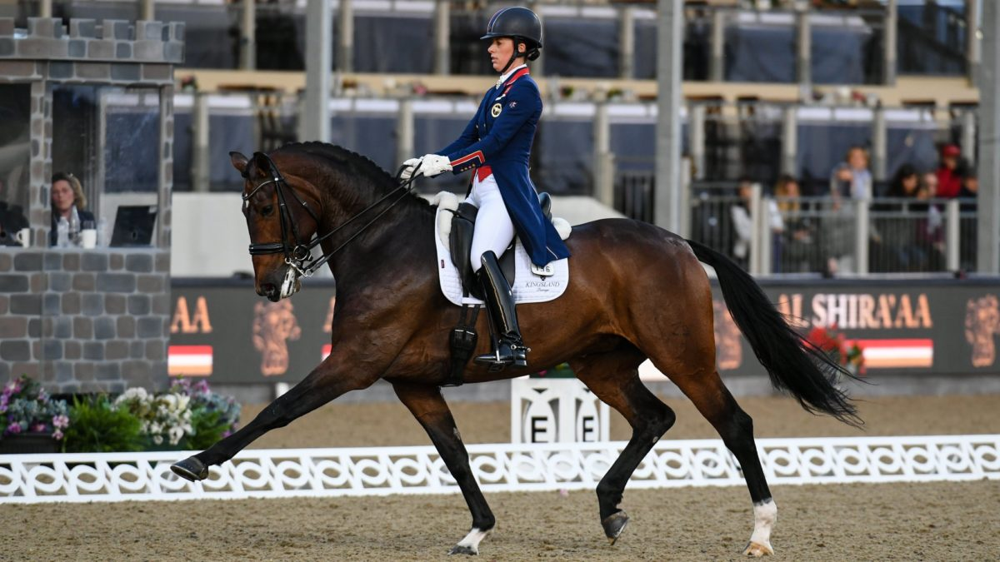
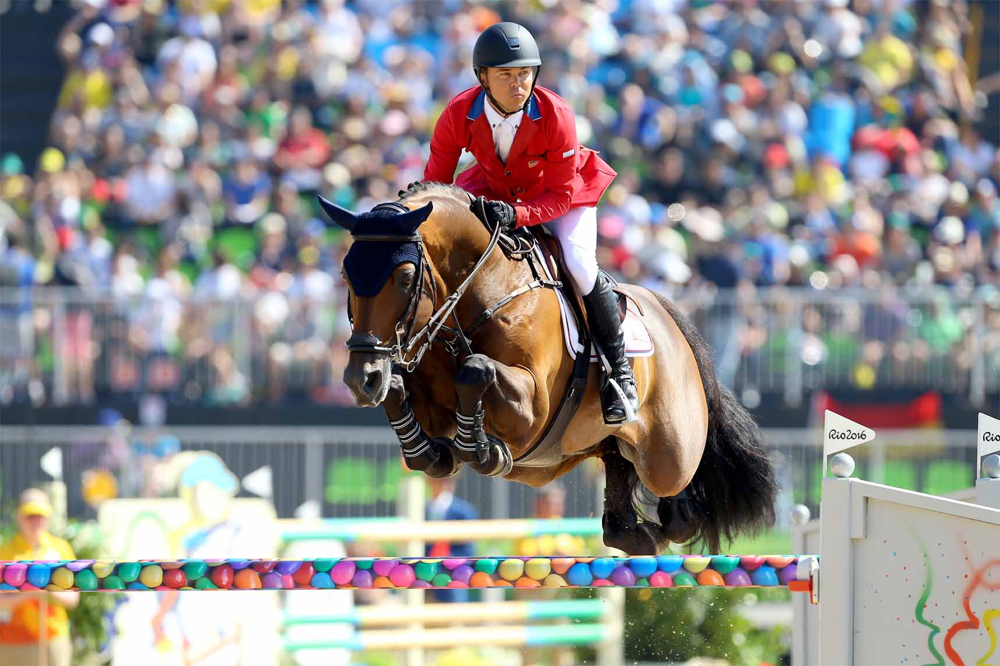
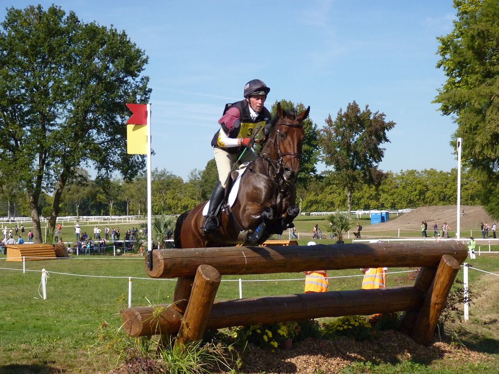
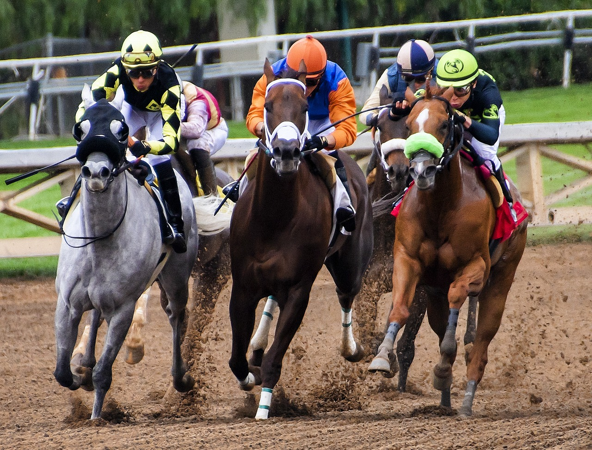
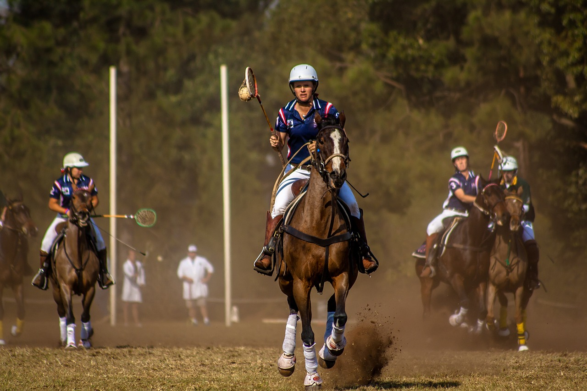
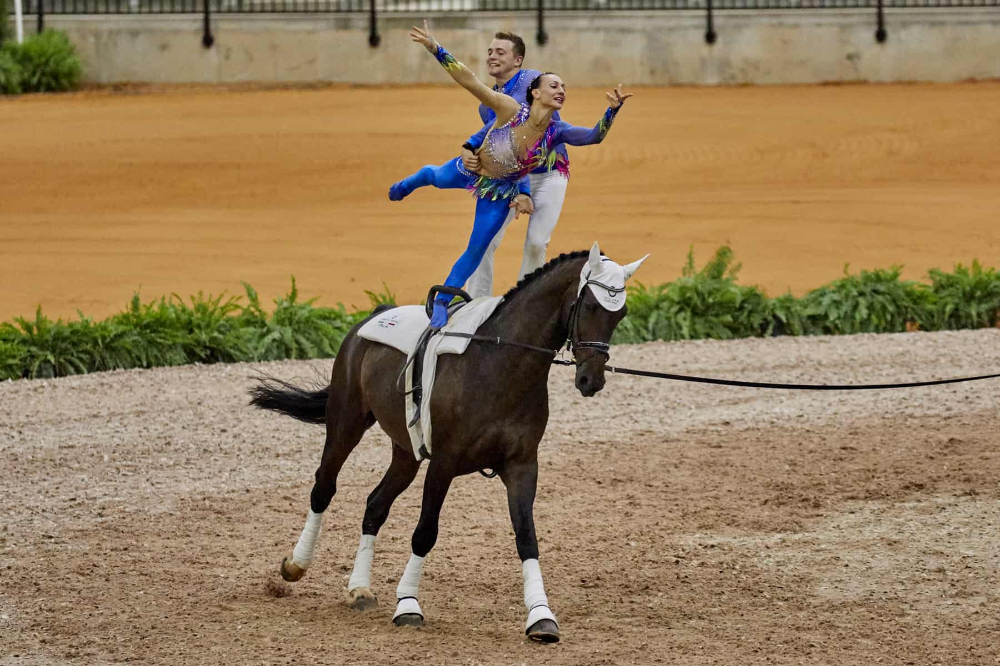

Dressage
Dressage is a highly skilled form of riding performed in exhibition and competition, as well as an "art" sometimes pursued solely for the sake of mastery. As an equestrian sport defined by the International Equestrian Federation, dressage is "the highest expression of horse training" where "horse and rider are expected to perform from memory a series of predetermined movements. Competitions are held at all levels from amateur to the Olympic Games and World Equestrian Games. Its fundamental purpose is to develop, through standardized progressive training methods, a horse's natural athletic ability and willingness to perform, thereby maximizing its potential as a riding horse. At the peak of a dressage horse's gymnastic development, the horse responds smoothly to a skilled rider's minimal aids. The rider is relaxed and appears effort-free while the horse willingly performs the requested movement.

Show Jumping
Eventing is an equestrian event where a single horse and rider combine and compete against other combinations across the three disciplines of dressage, cross-country, and show jumping. This event has its roots in a comprehensive cavalry test that required mastery of several types of riding. Show jumping is a relatively new equestrian sport. Until the Inclosure Acts, which came into force in England in the 18th century, there had been little need for horses to jump fences routinely, but with this act of Parliament came new challenges for those who followed fox hounds. The Inclosure Acts brought fencing and boundaries to many parts of the country as common ground was dispersed amongst separate owners. This meant that those wishing to pursue their sport now needed horses that were capable of jumping these obstacles.

Eventing
Eventing is an equestrian event where a single horse and rider combine and compete against other combinations across the three disciplines of dressage, cross-country, and show jumping. This event has its roots in a comprehensive cavalry test that required mastery of several types of riding. The competition may be run as a one-day event (ODE), where all three events are completed in one day (dressage, followed by show jumping and then the cross-country phase) or a three-day event (3DE), which is more commonly now run over four days, with dressage on the first two days, followed by cross-country the next day and then show jumping in reverse order on the final day. Eventing was previously known as Combined Training, and the name persists in many smaller organizations. The term "Combined Training" is sometimes confused with the term "Combined Test", which refers to a combination of just two of the phases, most commonly dressage and show jumping.Phases
Eventing is an equestrian triathlon, in that it combines three different disciplines in one competition set out over one, two, or three days, depending on the length of courses and number of entries. This sport follows a similar format in Australia, Canada, Ireland, United Kingdom and the United States.Dressage, Country-cross and Show Jumping
The dressage phase (held first) consists of an exact sequence of movements ridden in an enclosed arena (20×60 m for International 3DE but usually 20×40 m for ODE). The test is judged by one or more judges, who are looking for balance, rhythm, suppleness, and most importantly, the cooperation between the horse and rider. The challenge is to demonstrate that a supremely fit horse, capable of completing the cross-country phase on time, also has the training to perform in a graceful, relaxed, and precise manner. Dressage work is the basis of all the other phases and disciplines within the sport of eventing because it develops the strength and balance that allow a horse to go cross-country and show jump competently.


